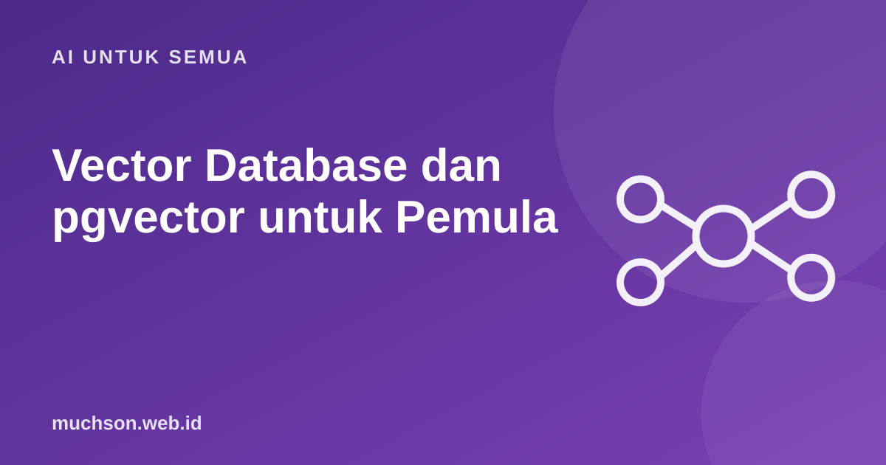

Beranda › Artikel › AI untuk Semua
AI untuk SemuaVector Database dan pgvector untuk Pemula
Setelah memahami embedding, pertanyaan berikutnya praktis: di mana menyimpannya, dan bagaimana mencari yang paling mirip dengan cepat? Anda tidak selalu butuh layanan baru. Bila aplikasi sudah memakai PostgreSQL, ekstensi pgvector memungkinkan pencarian semantik di database yang sama.

Apa yang disimpan
Setiap potongan teks diubah model embedding menjadi daftar angka (vektor), misalnya 1.024 atau 1.536 angka. Teks yang maknanya mirip menghasilkan vektor yang berdekatan.
Menyiapkan pgvector
CREATE EXTENSION IF NOT EXISTS vector;
CREATE TABLE potongan (
id BIGSERIAL PRIMARY KEY,
dokumen_id BIGINT NOT NULL,
judul TEXT,
isi TEXT NOT NULL,
kategori TEXT,
embedding vector(1536) NOT NULL -- sesuaikan dimensi model embedding Anda
);Ekstensi ini tersedia di banyak layanan PostgreSQL terkelola, termasuk Supabase, Neon, dan layanan cloud besar.
Mencari yang paling mirip
-- <=> jarak cosine, <-> jarak Euclidean (L2), <#> negatif inner product
SELECT id, judul, isi, 1 - (embedding <=> $1) AS kemiripan
FROM potongan
ORDER BY embedding <=> $1
LIMIT 5;
-- $1 = embedding dari pertanyaan pengguna| Operator | Jarak | Catatan |
|---|---|---|
<=> | Cosine | Paling umum untuk embedding teks |
<-> | L2 (Euclidean) | Jarak garis lurus |
<#> | Inner product (negatif) | Cepat bila vektor sudah dinormalisasi |
Index agar tetap cepat
Tanpa index, PostgreSQL membandingkan pertanyaan dengan setiap baris. Untuk ribuan baris masih cepat; untuk jutaan, butuh index perkiraan (approximate nearest neighbor).
CREATE INDEX ON potongan USING hnsw (embedding vector_cosine_ops);Index perkiraan bisa sesekali melewatkan hasil terbaik. Itu kompromi kecepatan. Ukur kualitas pencarian dengan contoh pertanyaan nyata.
Filter metadata dan pencarian hybrid
Keunggulan memakai PostgreSQL: Anda bisa menggabungkan pencarian vektor dengan filter biasa dan hak akses.
SELECT judul, isi
FROM potongan
WHERE kategori = 'kebijakan-retur'
AND dokumen_id IN (SELECT id FROM dokumen WHERE tim_id = $2) -- hak akses
ORDER BY embedding <=> $1
LIMIT 5;Pencarian vektor kadang kurang tepat untuk kode produk atau nama spesifik ("FR-01"). Pencarian hybrid menggabungkan full-text search PostgreSQL dengan hasil vektor, lalu menggabungkan peringkatnya.
Kapan perlu vector database khusus?
Tanya jawab
Berapa dimensi vektor yang harus dipakai?
Bagaimana bila saya ganti model embedding?
Seberapa besar potongan teks yang ideal?
Sumber dan bacaan lanjut
- pgvector (GitHub): open-source vector similarity search for Postgres
- Supabase Docs: pgvector
- Apa itu embedding dan pencarian semantik (artikel terkait)